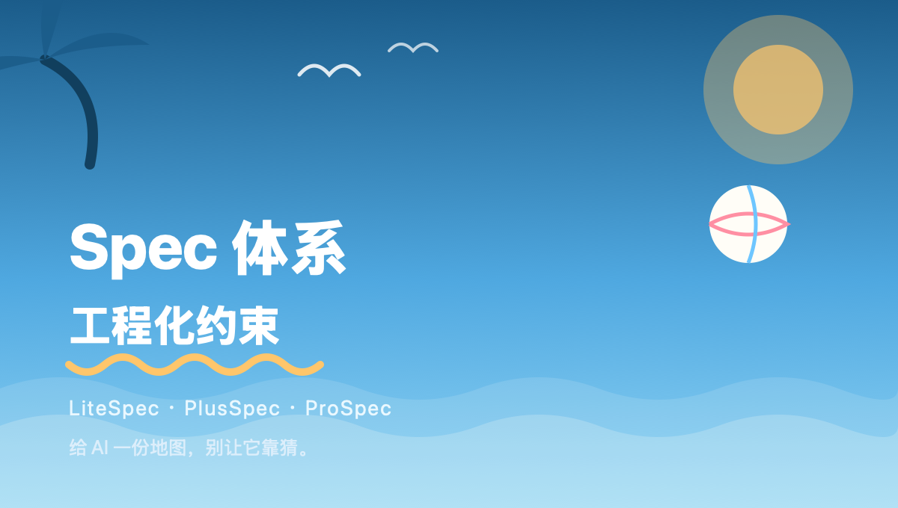

现在 vibe coding 的比重越来越高， AI 生成的代码也越来越多。但先扛不住上下文的，不是 AI ，是我——同时开好几个项目，脑子先宕机。
Vibe coding 说白了是开盲盒。你压根不知道 AI 内部到底怎么实现的，改来改去总能跑起来，但跑起来之后呢？谁来维护？半年后谁还记得这段逻辑是怎么拼出来的？
这就是 spec 这个东西冒出来的原因。
前半年断断续续聊过几次 spec ，团队开发那边基本会考虑用 openspec 来维护。说白了就是把项目的上下文，用某种规范和格式，写成文本存在一个固定目录里。以后 agent 不用再去翻全部代码，看这份 spec 就能大概摸清项目现状。
openspec 的思路我认可，但太重了——流程一多，人就懒得维护， spec 立刻就烂尾。
根据自己这几年的开发经验，我把 spec 拆成了三种复杂度：
| 模式 | 定位 | 场景 |
|---|---|---|
| 🏖️ LiteSpec （ Feature driven ） | 个人项目，自己玩 | 一个人 |
| ⛱️ PlusSpec （ Issues driven ） | feature + issues 双维度 | 小团队 |
| 🌊 ProSpec （ Delivery driven ） | 重测试、重交付 | 中大型核心项目 |
这三层不是并列关系，是跟着项目往前走自然长出来的——issue 越修越多，交付越到后面越不能出岔子，测试和验收自然就得跟上。
LiteSpec：以 feature 为单位管 spec 。新功能开一个 feature-xx 分支，每次先写这个 feature 的 spec ，再动手写代码。
PlusSpec： feature 不断堆起来之后， issue 也跟着来了——修 bug ，老板天天堵在门口那种。
ProSpec：说实话，这一层我自己都没跑出一个完整闭环，还在磨。重点在 TDD 那条链路上的测试交付。
很大一部分原因是，这套体系得让我自己愿意维护它。 spec 这东西一旦没人管，就变成地狱——半吊子的内容、过时的说明， agent 理解出错，反而比不写 spec 还浪费时间。现在这压力，谁经得起被这么坑一次？
这确实会多烧一些 token 。但项目要长期维护，这笔账躲不掉。毕竟出了问题要背锅的时候，还得靠它抢救。
这套体系里我还塞了几个自己的 subagents ，把各个 skill 拆进对应的 agent 里，混了点 superpower 的编排思路进去。 CI 门禁也是同一套逻辑——每次跑都检查 spec 状态，别让人忘。
用起来这块，我的原则是尽量简单——不改变用户习惯，不去"教"用户，顺着大家本来就爱用的方式走。个人用的话，再按具体场景客制化就是了——现在 agent 能力摆在这，客制化的成本其实不高。